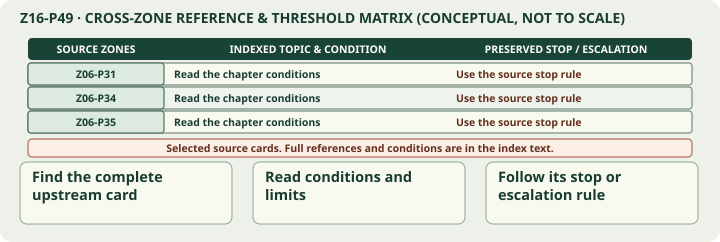

Z16-P49 · Field reference atlas · New manuscript
Firearms Safety, Archery, Treestands and Game-Zoonosis Hygiene Index
Consolidate bounded weapon-safety rules, elevated-stand fall arrest, and CWD, Trichinella, tularemia game-handling gates from Z06.
When it applies · Lawful regulated hunting planning, field dressing, and wild-game preparation.
Equipment · Full offline reader (Z06, Z10), primary zone cards, and local emergency and agency references.

Actions
- Enforce all four fundamental firearm safety rules simultaneously alongside formal DNR certification, unloaded obstacle, transport handling, statutory blaze visibility, and clear backstops (Z06-P31..P33).[A06, H02, H03]
- Flex-check carbon arrows, hood broadheads in rigid quivers (Z06-P34), stay tethered ground-to-ground in a certified full-body treestand harness with suspension-relief strap, and hoist unloaded gear on a haul line (Z06-P35).[A06, H03]
- Wear impervious gloves during field dressing, reject visibly sick or found-dead animals, follow MN DNR CWD zone testing, no-spine-sawing rules (cooking never destroys prions), cook wild bear at least 165 F, and guard against rabbit tularemia (Z06-P37..P43).[A06, H08, H09, H10, H11]
Failure recognition · Climbing stands untethered, carrying loaded guns over fences, or sawing CWD-zone deer spines causes fatal trauma and zoonotic, prion exposure.[H03, H08, H09]
Verify · Certification, unloaded crossings, full-body harness, gloves, CWD test hold, and thermometer cooking are verified.[H03, H08, H10]
Stop or change course · Stop hunting immediately on unsafe muzzle control, damaged arrows, straps, expired legal shooting light, or visibly sick wildlife.[H02, H03, H11]
Evidence and editorial notes
- A06 · Minnesota DNR · Minnesota Fishing Regulations (Current web edition)
- Section: Lawful harvest, trapping-hazard, and regulatory cross-reference · Conditions: Indexing Z06 harvest, Z07 trap-hazard avoidance, and agency reporting lines
Support: Regulatory quick-references always pair species/season pointers with jurisdiction, authority lookup, check date, and explicit rejection of emergency exemptions.
Limitations: Index pointers expire with annual rule cycles and require current agency verification. · Conflicting evidence: None noted.
Editorial note: Preserves Z06/Z07 legal authority bounds in Z16. · Specialist reviewer: Wildlife legal reviewer
Primary source · checked 2026-11-25 - H02 · Minnesota DNR · Minnesota Hunting and Trapping Regulations (Current web edition)
- Section: Hunting licenses, zones, seasons, and legal methods · Conditions: Minnesota big game, small game, and bird hunting
Support: Hunters must verify current license, permit-area, season, legal-hours, blaze-clothing, and method rules with the governing authority prior to afield activity.
Limitations: Private-land trespass law, municipal ordinances, and tribal jurisdiction apply separately; emergencies do not suspend wildlife law. · Conflicting evidence: None noted.
Editorial note: Establishes Z06 hunting authority gate. · Specialist reviewer: Minnesota DNR wildlife law reviewer
Primary source · checked 2026-11-25 - H03 · Minnesota DNR · Firearms Safety Certification and Hunter Education (Current web edition)
- Section: Four fundamental firearm safety rules and certification · Conditions: Any firearm handling, transport, or field carry
Support: Treat every firearm as loaded, keep the muzzle in a safe direction, keep finger off the trigger until ready to shoot, and verify target and what is beyond it.
Limitations: Certification is required by age/statute in Minnesota; written summaries never substitute for formal certified safety instruction. · Conflicting evidence: None noted.
Editorial note: Mandatory Z06 bounded weapon-safety gate. · Specialist reviewer: Certified hunter-education and firearm safety instructor
Primary source · checked 2026-11-25 - H08 · Minnesota DNR · Chronic Wasting Disease (CWD) in Minnesota Deer (Current web edition)
- Section: Chronic Wasting Disease surveillance zones and carcass rules · Conditions: Harvesting cervids in Minnesota CWD management/control zones
Support: DNR designates CWD zones with mandatory sampling, carcass movement restrictions, and proper disposal rules.
Limitations: Infected deer can appear completely healthy; check current zone maps and test before consuming venison from affected areas. · Conflicting evidence: None noted.
Editorial note: Core Z06 CWD regulation and safety rule. · Specialist reviewer: Wildlife veterinarian and DNR reviewer
Primary source · checked 2026-11-25 - H09 · CDC · About Chronic Wasting Disease (CWD) Hunter Precautions (2024)
- Section: CDC CWD precautions for hunters and field dressing · Conditions: Field dressing and consuming venison from CWD-affected areas
Support: CDC advises wearing latex or rubber gloves, minimizing handling of brain and spinal tissues, testing harvested deer from CWD areas, and not eating meat from CWD-positive animals.
Limitations: Standard cooking temperatures do not destroy prions; avoid sawing through bone or spinal cord. · Conflicting evidence: None noted.
Editorial note: Reinforces Z06 prion hygiene boundary. · Specialist reviewer: Infectious-disease and wildlife veterinarian
Primary source · checked 2026-11-25 - H10 · CDC · About Trichinellosis and Safe Wild Game Cooking (2024)
- Section: Trichinellosis prevention in wild bear and omnivore game · Conditions: Handling and cooking wild bear, wild boar, and carnivore/omnivore meat
Support: Wild bear and other omnivorous game can carry freeze-resistant Trichinella larvae; cook thoroughly to USDA-verified safe internal temperature verified with a food thermometer.
Limitations: Freezing wild game meat does not reliably kill Arctic/sylvatic Trichinella species; curing, smoking, or microwaving is unreliable. · Conflicting evidence: None noted.
Editorial note: Critical Z06 wild-game parasite safety rule. · Specialist reviewer: Food-safety microbiologist and veterinarian
Primary source · checked 2026-11-25 - H11 · CDC · About Tularemia and Wild Rabbit / Game Handling Precautions (2024)
- Section: Tularemia precautions with wild rabbits, hares, and rodents · Conditions: Field handling of small game and carcasses
Support: Wear impervious gloves when handling wild rabbits/rodents, avoid sick or sluggish animals, and cook meat thoroughly; bacteria can enter through skin breaks or aerosols.
Limitations: Do not handle found-dead wildlife; seek medical evaluation promptly for fever or skin ulcers after exposure. · Conflicting evidence: None noted.
Editorial note: Critical Z06 small-game zoonosis safety gate. · Specialist reviewer: Infectious-disease specialist
Primary source · checked 2026-11-25
Source lineage · New manuscript (Z16 P20 harvest index) · Classification · New manuscript.